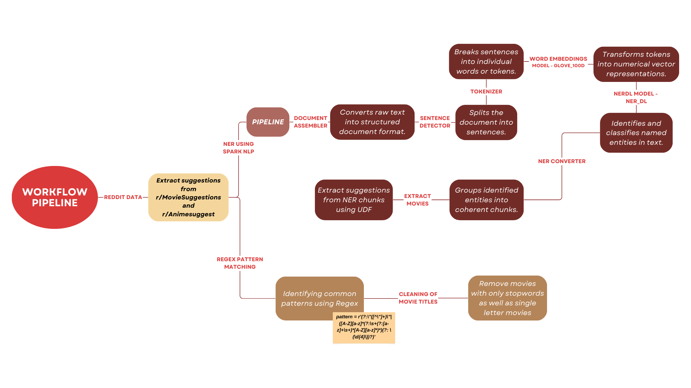

Natural Language Processing

This page outlines a technical proposal designed to address specific business goals by applying NLP methodologies to analyze and understand the content of subreddits. The primary objectives include uncovering popular themes and gauging sentiment.The subreddit chosen for analysis in this part is r/anime, r/movies, r/Animesuggest, r/MovieSuggestions.
Technical Analysis Report
Comprehensive Analysis Report on Reddit Discussions: Unveiling Trends in Movie Popularity
This analysis aims to discern prevailing trends in Reddit discussions related to movies. The primary goal is to compile a dataset featuring the most talked-about movies on the platform. Subsequently, this dataset will be cross-referenced with our external review data, particularly from platforms like Rotten Tomatoes. The objective is to determine if movies generating the most buzz on Reddit also receive positive critical acclaim or exhibit differing evaluations.
Before delving into detailed text cleaning processes, we conducted a preliminary analysis encompassing both movie and anime-related Reddit communities. Our overarching goal is to ultimately provide insights on Movies, Anime, and TV shows. In this initial phase, we performed a word count analysis on submissions from both movie and anime Reddits. Below are the top words identified, accompanied by their respective counts:
This initial exploration has revealed that discussions on Reddit heavily revolve around users’ favorite anime and movies. To gain deeper insights, our next step involves analyzing the comments more comprehensively to extract the specific names of the most-discussed movies and anime. By doing so, we aim to identify the titles that resonate most strongly within the community, shedding light on the exceptionally popular content among Reddit users.
In our analysis of Reddit comments related to movies, we initially employed TF-IDF vectorization on a DataFrame containing cleaned and tokenized text. While TF-IDF is a powerful technique for understanding the significance of words within individual documents relative to the entire dataset, its application in our specific context has revealed limitations.
TF-IDF is inherently designed to highlight the importance of words in a document set, but its utility in extracting specific movie and anime references from Reddit comments appears to be constrained. Our objective is to identify and extract the most discussed or mentioned movie and anime titles, and for this purpose, alternative methods may prove more effective.
Recognizing the unique nature of our analysis, we have decided to explore alternative approaches that directly cater to the extraction of movie and anime references from Reddit comments. This strategic shift is grounded in the understanding that while TF-IDF is valuable for certain tasks, it may not be the optimal choice for our current goal of pinpointing and analyzing explicit references to movies and anime in the Reddit data.
By adopting alternative methods tailored to our specific objective, we aim to enhance the precision and relevance of our analysis, ensuring a more effective exploration of the most discussed titles within the Reddit community. This adaptive approach aligns our methodology with the intricacies of the content present in Reddit comments, optimizing our ability to uncover and analyze meaningful movie and anime references.
Key Steps:
Extracting movie names from the reddit comment Submission
To extract relevant information efficiently, we employed sophisticated text cleaning techniques. These included:
Document Assembler: Aggregated and organized the raw text data from Reddit comments, preparing it for further processing.
Sentence Detector: Segregated the text into distinct sentences, enhancing the granularity of our analysis.
BERT Embeddings: Utilized advanced BERT (Bidirectional Encoder Representations from Transformers) embeddings to capture contextualized representations of words, improving the accuracy of subsequent analyses.
Named Entity Recognition (NER): Applied NER techniques to identify entities within the text, specifically focusing on recognizing movie names mentioned in the comments. Using ORG and PERSON labels
NER Converter: Transformed the identified named entities, such as movie names, into a structured format suitable for dataset construction.
After extracting initial movie names, we employed targeted regex pattern matching to capture additional titles:
- Camel Casing Words: Identified and extracted movie titles written in Camel Case format.
- Quoted Phrases: Recognized and extracted movie names enclosed within double quotes.
- Capitalized Word Pairs: Extracted words between two capital-letter-starting words, facilitating retrieval of stylistically formatted movie titles.
- Numeric Associations: Captured numeric values following movie mentions, linking numerical information like release years to specific titles.
- Year in Parentheses: Identified words before the year mentioned within parentheses, aiding in the extraction of titles near their release years.
Following this extraction, we refined the dataset by removing stop words based on element length. This meticulous process enhanced the accuracy and relevance of our dataset, ensuring a nuanced and precise analysis of movie discussions on Reddit.

In the subsequent phase, our focus shifted to conducting sentiment analysis on our external dataset, utilizing the Rotten Tomatoes movie review dataset. To ensure the data was well-prepared for sentiment analysis, we implemented a series of fundamental text cleaning processes. The key techniques applied included:
- Document Assembler: Aggregated and organized the raw text data, preparing it for subsequent processing steps.
- Tokenizer: Employed tokenization to break down the text into individual units, enhancing the granularity of our analysis.
- Normalizer: Applied normalization techniques to standardize the text, ensuring consistent formatting and reducing variability.
- Lemmatizer: Utilized lemmatization to transform words to their base or root form, enhancing the accuracy of sentiment analysis by considering the underlying meaning of words.
- Stopwords Remover: Implemented a stopwords removal process to eliminate common words that do not contribute significantly to sentiment analysis, thereby focusing on more meaningful content.
These text cleaning techniques collectively facilitated the creation of a refined and standardized dataset for sentiment analysis.
For sentiment analysis, we employed two distinct sentiment models:
- SentimentDL_use_twitter: This model leverages advanced deep learning techniques to discern sentiment, particularly tailored for the nuances and expressions commonly found in Twitter-like text.
- ClassifierDL_use_emotion: Utilizing a classifier approach, this model gauges sentiment by understanding emotional nuances present in the text, providing a comprehensive analysis of sentiment with a focus on emotional context.
By incorporating these advanced sentiment analysis models and employing meticulous text cleaning processes, we aimed to extract nuanced sentiment insights from the Rotten Tomatoes movie review dataset. This multi-faceted approach ensures a robust and comprehensive analysis of sentiment dynamics associated with the movies in our external dataset.
Most Suggested Movies on Reddit
The social platform Reddit is a treasure trove of public opinion and preferences, particularly when it comes to movie recommendations. To extract the movies, we’ve implemented a data extraction and analysis pipeline to identify the most frequently suggested movies across various Reddit threads.
Methodology:
Named Entity Recognition (NER): NER was applied to extract movie titles from unstructured text in Reddit discussions.
Pattern Matching: Further refinement was achieved through pattern matching techniques to ensure accurate identification of movie titles.
Context Analysis: The context surrounding extracted entities was analyzed to validate the relevance of identified movie titles.
Explode and Aggregate: The data was transformed through the “explode” operation, breaking down entries into individual suggestions. Aggregation techniques were then employed to count the occurrences of each movie title, providing a quantitative measure. We initiated the process by collecting Reddit posts from threads likely to contain movie suggestions. This involved utilizing Reddit’s API to fetch posts from subreddits renowned for movie discussions. Upon retrieval, the posts underwent a standard preprocessing stage, which included lowercasing, tokenization, and the removal of stop words and punctuation. This step was crucial to prepare the text data for more sophisticated natural language processing (NLP) tasks.
Named Entity Recognition (NER) The cleansed text data was then processed through a Named Entity Recognition (NER) model. NER is an NLP technique that automatically identifies and classifies key information in text, such as the names of people, places, and, pertinent to our task, movies. We utilized a pre-trained NER model tailored to recognize movie titles within a larger corpus.
Pattern Matching In parallel to NER, we employed pattern matching algorithms to capture movie mentions that might not be recognized by NER. Pattern matching utilized a combination of keyword searches and lexical patterns that are commonly associated with movie titles.
Context Analysis To refine the results further, context analysis was performed. This method assessed the surrounding text of potential movie titles to discern whether the mention was indeed a suggestion. For example, phrases like “I recommend” or “you should watch” preceding a movie title indicated a suggestion.
Data Transformation The identified movie titles were transformed into a structured format suitable for analysis. The transformation involved “exploding” lists of movies found in individual posts into separate records to facilitate counting.
Aggregation Finally, we aggregated the results by counting the frequency of each unique movie title across the dataset. This step was implemented using group-by operations that tallied the number of suggestions per movie. The aggregation stage culminated in a ranked list of movies by the number of times they were suggested. This ranked list provided clear insights into the most popular movie recommendations on Reddit.

Upon analyzing user recommendations on Reddit, “Hereditary” stood out as the most frequently suggested movie. This observation prompted us to delve deeper into whether these highly recommended films were not only popular among users but also well-received in terms of positive sentiment.
To assess this, we turned to the extensive review data available on Rotten Tomatoes. Our goal was to determine if the movies recommended on Reddit also lay up high ratings and positive sentiments from critics and audiences alike. To achieve this, we conducted sentiment analysis on the review data, calculating sentiment scores for each film.
The sentiment analysis allowed us to quantify the balance between positive and negative sentiments expressed in the reviews. Subsequently, we devised a comprehensive rating metric that considered both the sentiment scores and overall sentiment polarity. This approach aimed to provide a nuanced understanding of how well-received the movies were, beyond conventional rating systems. By correlating the recommendations from Reddit with sentiment scores and ratings on Rotten Tomatoes, our analysis sought to reveal whether the most suggested movies on the platform not only captured the attention of users but also resonated positively with a broader audience, shedding light on the intersection of user preferences and critical acclaim.
SENTIMENT ANALYSIS ON ROTTEN TOMATOES REVIEW DATA
Our journey into sentiment analysis commenced with the comprehensive collection of review text for every movie listed on Rotten Tomatoes. This exhaustive dataset served as the bedrock for our analytical exploration, encapsulating a rich tapestry of opinions from both discerning critics and diverse audience perspectives.
Data Cleaning Process: Document Conversion: To impart structure to the amassed review text, we employed a sophisticated Document Assembler. This transformative step converted the initially unstructured reviews into a meticulously organized format, laying a robust foundation for the subsequent analytical stages.
Tokenization: Embracing the power of a Tokenizer, we meticulously dissected the reviews into individual tokens. This intricate segmentation allowed us to discern the nuanced intricacies within each review, enabling us to capture the essence of expressed opinions at a remarkably granular level.
Normalization: In pursuit of data uniformity, we judiciously normalized all tokens to lowercase using a specialized Normalizer. This meticulous adjustment eradicated potential inconsistencies stemming from variations in letter case, fostering a standardized dataset primed for in-depth analysis.
Lemmatization: Elevating the sophistication of our understanding, a Lemmatizer Model was applied to refine the reviews further. This process intelligently reduced words to their base root form, amplifying the model’s capability to grasp the fundamental meaning and sentiment intricately woven into each review.
Data Transformation: The meticulously processed data underwent a transformative phase, transitioning into a human-readable format facilitated by a Finisher. This critical step enhanced the interpretability of the dataset, setting the stage for subsequent insightful analyses.
Sentiment Analysis:
Document Structuring: The pre-processed data was once again converted into a structured document format, preparing it for the advanced stages of sentiment analysis.
Sentence Embeddings: Using the capabilities of the tfhub_use model, we converted the documents into numerical sentence embeddings. This step facilitated a deeper understanding of the semantic content within each review, capturing the intricacies of expressed opinions.
Sentiment Inference: Leveraging the power of the Sentiment DL Model (specifically, sentimentdl_use_twitter), we determined the sentiment of each review. Trained on diverse data, this model enabled precise inference, categorizing sentiments as positive, negative, or neutral.